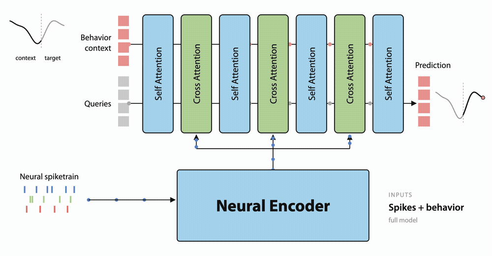

BEEMO learns a behavior prior across many sessions and reuses it when decoding behavior from spikes on a new recording. The prior can be learned together with the neural data, or decoupled from it and learned on behavior alone, with a neural encoder attached afterwards. BEEMO supports two neural encoders: POYO, a latent-bottleneck transformer with spike tokenization, and NDT, which uses binned tokenization.
